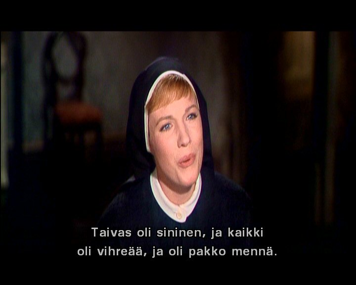

Tuesday, June the 22nd, 2004
back to: title, date or indexes
Following yesterday's item about The Sound Of Music, I have received if not thousands, then at least two requests to illustrate the jarring concept of holy sisters engaged in the quite atrocious practice of pretending to be Finnish. Where will it all end?
